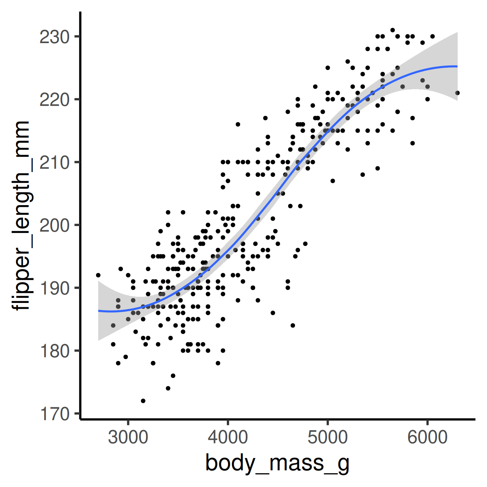
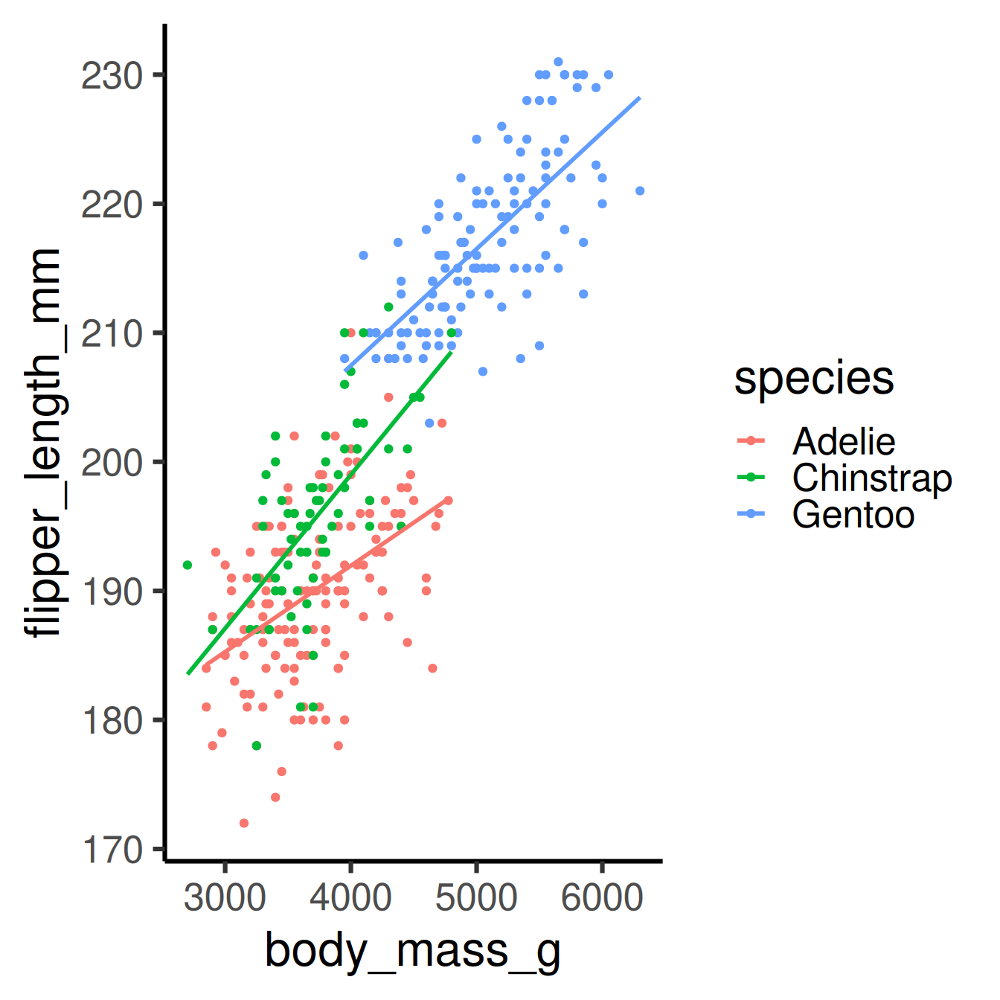
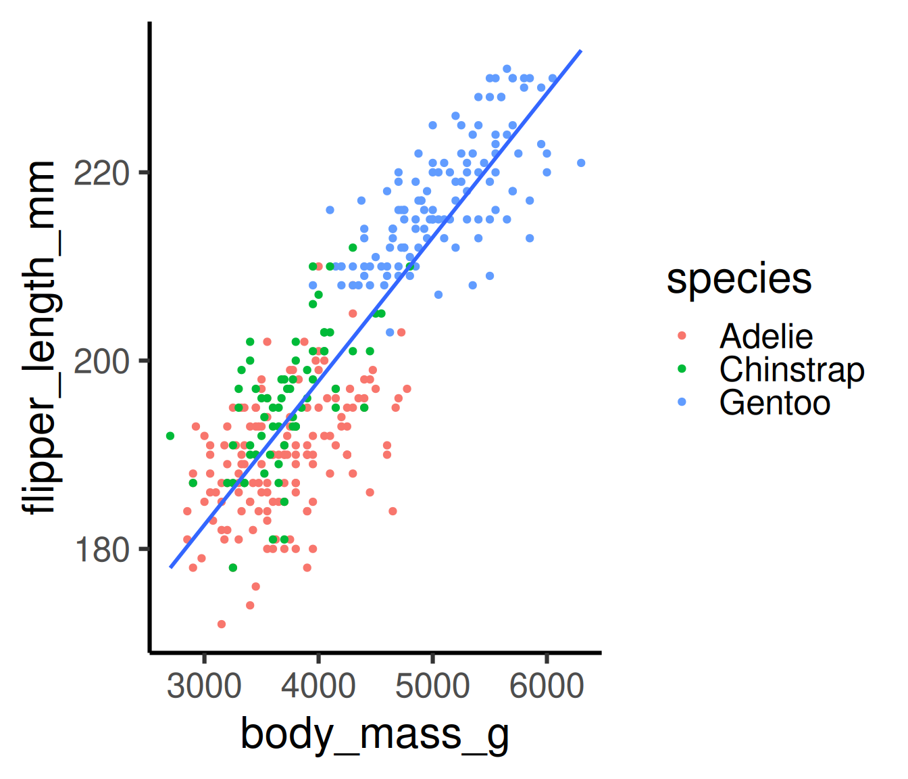
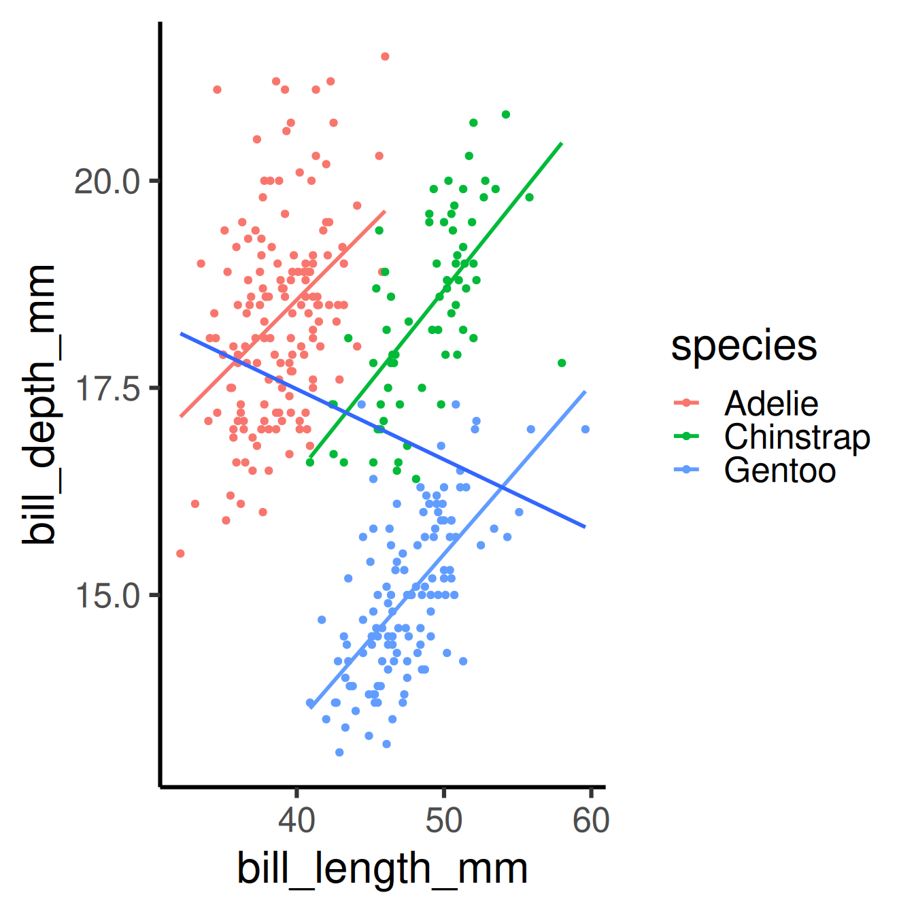
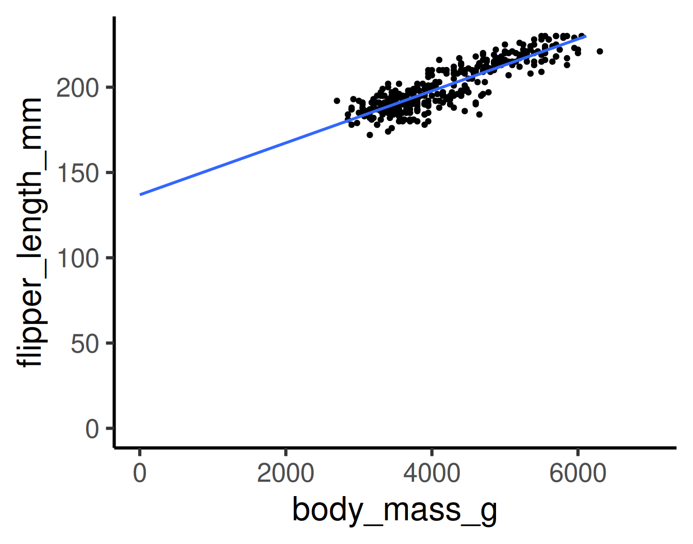
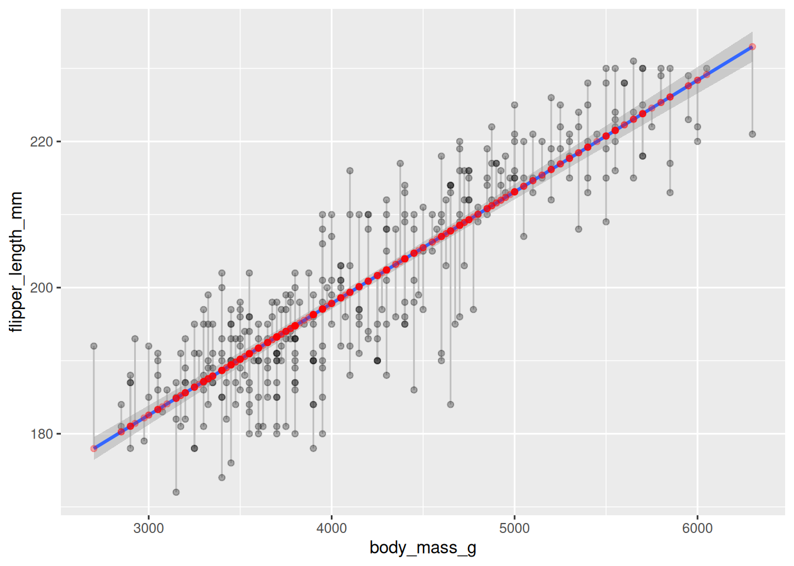
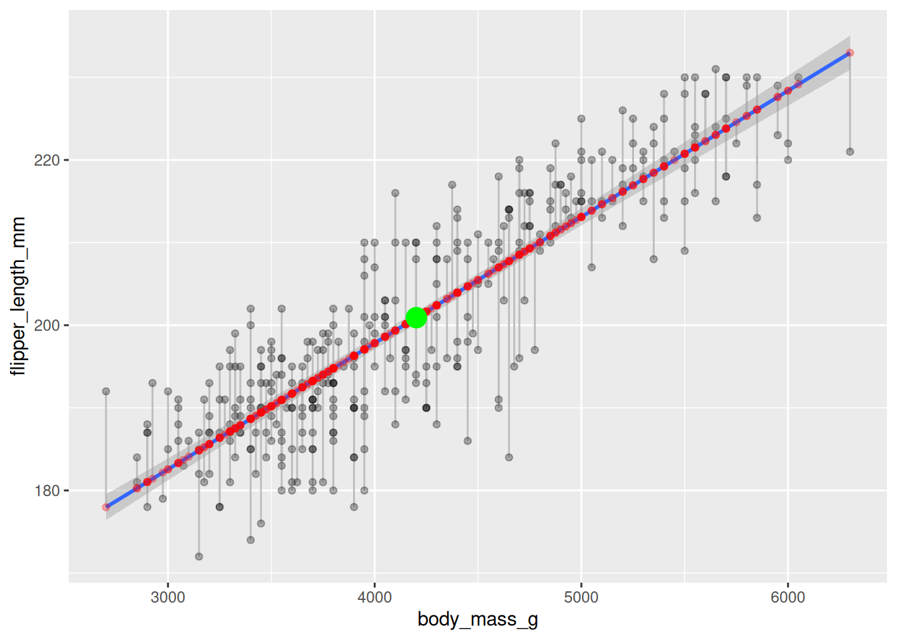
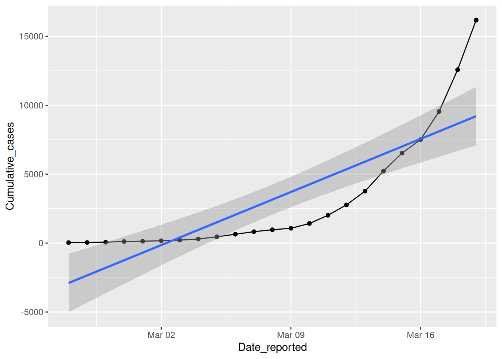
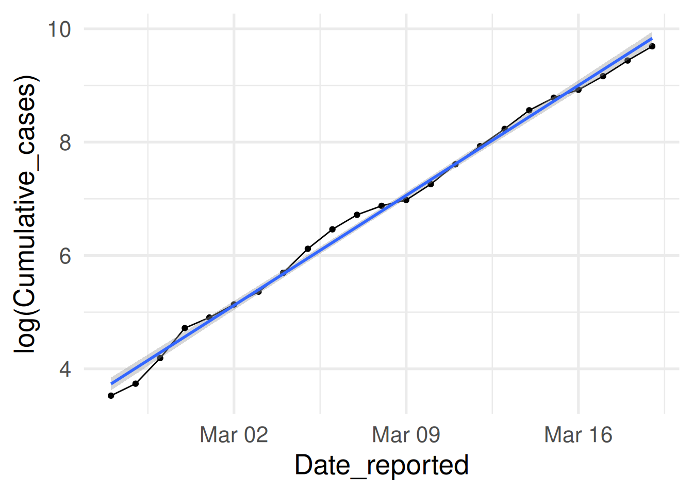

Attaching package: 'palmerpenguins'
The following object is masked from 'package:modeldata':
penguins
The following objects are masked from 'package:datasets':
penguins, penguins_raw
1 Models in Science
1.1 What is a model?
A model is an informative representation of an object, person or system.
A model is a simplified representation of the real world focusing on the essential parts for its purpose.
Scientific modeling is an activity that produces models representing empirical objects, phenomena, and physical processes, to make a particular part or feature of the world easier to
Warning: Removed 2 rows containing non-finite outside the scale range
(`stat_smooth()`).
Warning: Removed 2 rows containing missing values or values outside the scale range
(`geom_point()`).

This is a less theory-driven and more data-driven model. Why? We don’t have a simple mathematical form of the function.
2.7 Terminology variable-based models
Response variable:3 Variable whose behavior or variation you are trying to understand, on the y-axis
Explanatory variable(s):4 Other variable(s) that you want to use to explain the variation in the response, on the x-axis
Predicted value: Output of the model function.
The model function gives the (expected) average value of the response variable conditioning on the explanatory variables
Residual(s): A measure of how far away a case is from its predicted value (based on the particular model)
Residual = Observed value minus Predicted value
The residual tells how far above/below the expected value each case is
2.8 More explanatory variables
How does the relation between flipper length and body mass change with different species?
penguins |>ggplot(aes(x = body_mass_g, y = flipper_length_mm, color = species)) +geom_point() +geom_smooth(method ="lm",se =FALSE) +theme_classic(base_size =24)
`geom_smooth()` using formula = 'y ~ x'
Warning: Removed 2 rows containing non-finite outside the scale range
(`stat_smooth()`).
Warning: Removed 2 rows containing missing values or values outside the scale range
(`geom_point()`).

2.9 ggplot-hint: How to color penguins but keep one model?
Put the mapping of the color aesthetic into the geom_point command.
penguins |>ggplot(aes(x = body_mass_g, y = flipper_length_mm)) +geom_point(aes(color = species)) +geom_smooth(method ="lm", se =FALSE) +theme_classic(base_size =24)
`geom_smooth()` using formula = 'y ~ x'
Warning: Removed 2 rows containing non-finite outside the scale range
(`stat_smooth()`).
Warning: Removed 2 rows containing missing values or values outside the scale range
(`geom_point()`).

2.10 Beware of Simpson’s paradox
Slopes for all groups can be in the opposite direction of the main effect’s slope!
Warning: Removed 2 rows containing non-finite outside the scale range
(`stat_smooth()`).
`geom_smooth()` using formula = 'y ~ x'
Warning: Removed 2 rows containing non-finite outside the scale range
(`stat_smooth()`).
Warning: Removed 2 rows containing missing values or values outside the scale range
(`geom_point()`).

2.12 Models - upsides and downsides
Models can reveal patterns that are not evident in a graph of the data. This is an advantage of modeling over simple visual inspection of data.
How would you visualize dependencies of more than two variables?
The risk is that a model is imposing structure that is not really there in the real world data.
People imagined animal shapes in the stars. This is maybe a good model to detect and memorize shapes, but it has nothing to do with these animals.
Every model is a simplification of the real world, but there are good and bad models (for particular purposes).
A skeptical (but constructive) approach to a model is always advisable.
2.13 Variation around a model
… is as interesting and important as the model!
Statistics is the explanation of uncertainty of variation in the context of what remains unexplained.
The scattered data of flipper length and body mass suggests that there maybe other factors that account for some parts of the variability.
Or is it randomness?
Adding more explanatory variables can help (but need not)
2.14All models are wrong …
… but some are useful. (George Box)
Extending the range of the model:
penguins |>ggplot(aes(x = body_mass_g, y = flipper_length_mm)) +geom_point() +geom_smooth(method ="lm", se =FALSE, fullrange =TRUE) +xlim(c(0,7000)) +ylim(c(0,230)) +theme_classic(base_size =24)
`geom_smooth()` using formula = 'y ~ x'
Warning: Removed 3 rows containing non-finite outside the scale range
(`stat_smooth()`).
Warning: Removed 3 rows containing missing values or values outside the scale range
(`geom_point()`).
Warning: Removed 10 rows containing missing values or values outside the scale range
(`geom_smooth()`).

The model predicts that penguins with zero weight still have flippers of about 140 mm on average.
Is the model useless? Yes, around zero body mass. No, it works OK in the range of the body mass data.
2.15 Two model purposes
Linear models can be used for:
Explanation: Understand the relationship of variables in a quantitative way. For the linear model, interpret slope and intercept.
In other words: We make inference about relations in any sample of penguins.
Prediction: Plug in new values for the explanatory variable(s) and receive the expected response value. For the linear model, predict the flipper length of new penguins by their body mass.
average flipper_length_mm\(= \beta_0 + \beta_1\cdot\)body_mass_g
3.3 Step 1: Specify model
library(tidymodels)linear_reg()
Linear Regression Model Specification (regression)
Computational engine: lm
3.4 Step 2: Set the model fitting engine
linear_reg() |>set_engine("lm")
Linear Regression Model Specification (regression)
Computational engine: lm
3.5 Step 3: Fit model and estimate parameters
Only now, the data and the variable selection comes in.
Use of formula syntax
linear_reg() |>set_engine("lm") |>fit(flipper_length_mm ~ body_mass_g, data = penguins)
parsnip model object
Call:
stats::lm(formula = flipper_length_mm ~ body_mass_g, data = data)
Coefficients:
(Intercept) body_mass_g
136.72956 0.01528
parsnip is package in tidymodels which is to provide a tidy, unified interface to models that can be used to try a range of models.
Note: The fit command does not follow the tidyverse principle the data comes first. Instead, the formula comes first. This is to relate to existing traditions of a much older established way of modeling in base R.
3.6 What does the output say?
linear_reg() |>set_engine("lm") |>fit(flipper_length_mm ~ body_mass_g, data = penguins)
parsnip model object
Call:
stats::lm(formula = flipper_length_mm ~ body_mass_g, data = data)
Coefficients:
(Intercept) body_mass_g
136.72956 0.01528
. . .
average flipper_length_mm\(= 136.72956 + 0.01528\cdot\)body_mass_g
. . .
Interpretation:
The penguins have a flipper length of 138 mm plus 0.01528 mm for each gram of body mass (that is 15.28 mm per kg). Penguins with zero mass have a flipper length of 138 mm. However, this is not in the range where the model was fitted.
3.7 Show output in tidy form
linear_reg() |>set_engine("lm") |>fit(flipper_length_mm ~ body_mass_g, data = penguins) |>tidy()
Notation from statistics: \(\beta\)’s for the population parameters and \(\hat\beta\)’s for the parameters estimated from the sample statistics.
\[\hat y = \beta_0 + \beta_1 x\]
The population parameters \(\beta_0\) and \(\beta_1\) we cannot have. (\(\hat y\) stands for predicted value of \(y\). )
. . .
Instead, we estimate \(\hat\beta_0\) and \(\hat\beta_1\) in the model fitting process.
\[\hat y = \hat\beta_0 + \hat\beta_1 x\]
A typical follow-up data analysis question is what the fitted values \(\hat\beta_0\) and \(\hat\beta_1\) tell us about the (unknown) population-wide values \(\beta_0\) and \(\beta_1\)?
The regression line shall minimize the sum of the squared residuals
(or, identically, their mean).
Mathematically: The residual for case \(i\) is \(e_i = \hat y_i - y_i\).
Now we want to minimize \(\sum_{i=1}^n e_i^2\)
(or equivalently \(\frac{1}{n}\sum_{i=1}^n e_i^2\) the mean of squared errors, which we will look at later).
3.12 Visualization of residuals
The residuals are the gray lines between predicted values on the regression line and the actual values.
Code
pengmod <-linear_reg() |>set_engine("lm") |>fit(flipper_length_mm ~ body_mass_g, data = penguins)penguins |>bind_cols(predict(pengmod,penguins)) |>ggplot(aes(body_mass_g, flipper_length_mm)) +geom_segment(aes(x = body_mass_g, y = flipper_length_mm, xend = body_mass_g, yend = .pred), color ="gray") +geom_point(alpha =0.3) +geom_smooth(method="lm") +geom_point(aes(y=.pred), color ="red", alpha =0.3)
`geom_smooth()` using formula = 'y ~ x'
Warning: Removed 2 rows containing non-finite outside the scale range
(`stat_smooth()`).
Warning: Removed 2 rows containing missing values or values outside the scale range
(`geom_segment()`).
Warning: Removed 2 rows containing missing values or values outside the scale range
(`geom_point()`).
Removed 2 rows containing missing values or values outside the scale range
(`geom_point()`).

3.13 Check: Fitted values and Residuals
Recall: Residual = Observed value - Predicted value
The Predicted values are also called Fitted values. Hence:
The regression lines goes through the point (mean(x), mean(y)).
mean(penguins$body_mass_g, na.rm =TRUE)
[1] 4201.754
mean(penguins$flipper_length_mm, na.rm =TRUE)
[1] 200.9152
penguins |>bind_cols(predict(pengmod,penguins)) |>ggplot(aes(body_mass_g, flipper_length_mm)) +geom_segment(aes(x = body_mass_g, y = flipper_length_mm, xend = body_mass_g, yend = .pred), color ="gray") +geom_point(alpha =0.3) +geom_smooth(method="lm") +geom_point(aes(y=.pred), color ="red", alpha =0.3) +geom_point(data =tibble(x =mean(penguins$body_mass_g, na.rm = T), y =mean(penguins$flipper_length_mm, na.rm = T)), mapping =aes(x,y), color ="green", size =5)
`geom_smooth()` using formula = 'y ~ x'
Warning: Removed 2 rows containing non-finite outside the scale range
(`stat_smooth()`).
Warning: Removed 2 rows containing missing values or values outside the scale range
(`geom_segment()`).
Warning: Removed 2 rows containing missing values or values outside the scale range
(`geom_point()`).
Removed 2 rows containing missing values or values outside the scale range
(`geom_point()`).

3.15 Proporties of least squares regression
Residuals sum up to zero
pengmod <-linear_reg() |>set_engine("lm") |>fit(flipper_length_mm ~ body_mass_g, data = penguins)pengmod$fit$residuals |>sum()
[1] -1.135758e-13
. . .
There is no correlation between residuals and the explanatory variable
average bill_depth_mm\(= 20.9 -0.085\cdot\)bill_length_mm
. . .
Technical: The idea of the tidy() function is to turn an object into a tidy tibble. Here, it extracts the coefficients of the linear model (and more statistical information).
5.2 R-squared of a fitted model
\(R^2\) is the percentage of variability in the response explained by the regression model.
R-squared is also called coefficient of determination.
Definition:
\(R^2 = 1 - \frac{SS_\text{res}}{SS_\text{tot}}\)
where \(SS_\text{res} = \sum_i(y_i - f_i)^2 = \sum_i e_i^2\) is the sum of the squared residuals, and \(SS_\text{tot} = \sum_i(y_i - \bar y)^2\) the total sum of squares which is proportional to the variance of \(y\). (\(\bar y\) is the mean of \(y\).)
5.3 Linear model R-squared
linear_reg() |>set_engine("lm") |>fit(flipper_length_mm ~ body_mass_g, data = penguins) |>glance() # glance shows summary statistics of model fit
Assume \(x_1\) and \(x_2\) are categorical variables. We add their product in the linear model as a new variable: \(y_i = \beta_0 + \beta_1x_1 + \beta_2x_2 + \beta_{3}x_1x_2 + \dots\).
Example:\(x_1\) is gender female and \(x_2\)having kids
Thought experiment: When we estimate a model explaining life satisfaction with these. How would we see if being a mother increases life satisfaction more than being a father? positive coefficient for gender_female_x_has_kids
8 Nonlinear Models
8.1 When a linear model is bad
Example: Total corona cases in Germany in the first wave 2020.
whofull <-read_csv("data/WHO-COVID-19-global-data.csv", show_col_types =FALSE) |>filter(Country =="Germany") who <- whofull |>filter(Date_reported <"2020-03-20", Date_reported >"2020-02-25") who |>ggplot(aes(Date_reported, Cumulative_cases)) +geom_line() +geom_point() +geom_smooth(method ="lm")
`geom_smooth()` using formula = 'y ~ x'

8.2\(\log\) transformation
Instead of Cumulative_cases we look at \(\log(\)Cumulative_cases\()\)
who |>ggplot(aes(Date_reported, log(Cumulative_cases))) +geom_line() +geom_point() +geom_smooth(method ="lm") +theme_minimal(base_size =20)
`geom_smooth()` using formula = 'y ~ x'

Almost perfect fit of the linear model: \(\log(y)=\log(\beta_0) + \beta_1\cdot x\)
(\(y=\)Cumulative cases, \(x=\) Days)